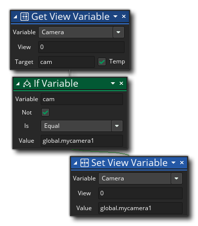

描述
此动作允许你获取 可视区域相关的某些内置变量的值。首先，你选择需要恢复的可视区域变量，然后把这个可视区域给目标（0-7），最后，目标变量记录了返回值（目标变量可以是一个临时局部变量）可视区域是用于绘制给定摄像机视图的屏幕区域（在房间编辑器中设置），下表列出了你能够以这种方式获得的不同变量：
变量 描述 摄像机 返回值是分配给这个可视区域的摄像机的唯一ID。(点 这里了解更多 )。 可见性 会返回的值为 真 或者 假。如果返回 真表示可视区域可见 (ie:在屏幕上绘制)，如果返回假表示没有绘制任何东西。 可视区域X坐标 游戏窗口内的可视区域的X坐标。 可视区域Y坐标 游戏窗口内的可视区域的Y坐标。 可视区域宽度 可视区域的宽度（单位像素） 可视区域高度 可视区域的高度（单位像素） 可视区域ID 返回赋给可视范围的唯一ID的值，如果没有分配曲面，返回-1。
动作语法：

参数：
参数 描述 变量 需要获得的内置视野变量 视野 目标可视范围T(0 - 7) 目标 用来储存返回值的目标变量 (可以标记为临时局部变量)
例如：
上述代码获得了赋给可视区域[0]的镜头ID，然后检查它是否与之前存在全局变量中的值一致。如果不一致，镜头设置成之前存储的值